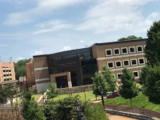
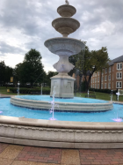
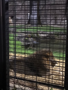
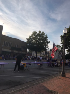
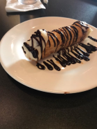
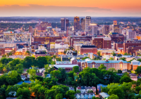

| Number | Contents |
| 1. | About UNA |
| 2. | About Florence |
| 3. | About Alabama |
UNA, which stands for the University of North Alabama, was built in 1830 and is the oldest public four-year university in Alabama.UNA is the oldest public four-year university in Alabama, founded in 1830. UNA's campus is 130 acres and is a beautiful campus with trees and fountains. The campus is also home to UNA's iconic mascot, Leo III, the lion. UNA offers more than 140 majors and concentrations, and with an average class size of 24 students, students benefit from small class sizes and close proximity to faculty. . In addition, tuition is the lowest in the state, making it relatively easy for students to attend. 
Florence is a beautiful city located in northwest Alabama. Florence has an area of 25 square miles and is located along the Tennessee River. According to the U.S. Census, the population is about 40,000. The city has a downtown area where residents can enjoy a variety of restaurants and eateries. Also, the Kennedy Douglas Center for the Arts is the center of events, and the First Friday event is a wonderful art and music event held on the first Friday of every month. 
Alabama is a state located in the southeastern part of the United States, bordered by Tennessee, Georgia,
Florida, and Tennessee. It is the 30th largest state in the United States by area and the 24th most populous. More than
80 percent of Alabama's population is Christian. Alabama has a lot of natural beauty, including the Tennessee River.
The symbol of the state is a white flag with a red cross.
